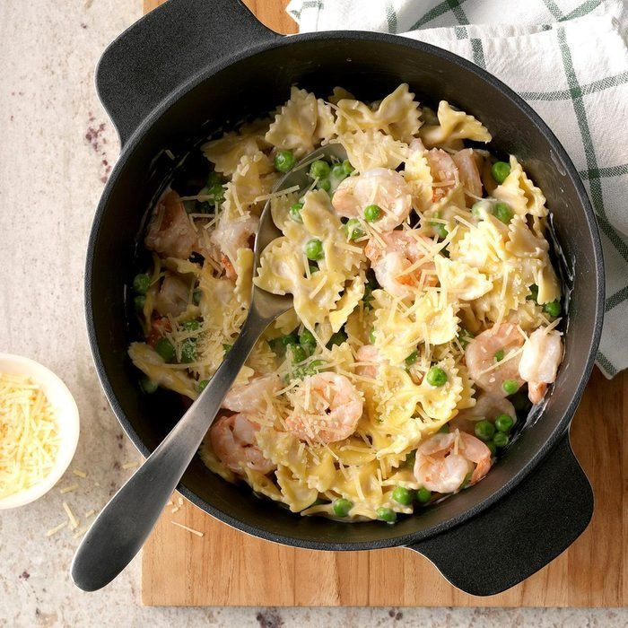

Shrimp Alfredo

Description
This delicious shrimp pasta alfredo recipe is quick and easy to make
because the ingredients are simple and the instructions are quick
and concise. Although short, the recipe creates a great meal to enjoy.
Ingredients
- 3 cups uncooked bow tie pasta
- 2 cups frozen peas
- 1 pound peeled and deveined cooked medium shrimp, tails removed
- 1 jar (15 ounces) Bertolli Alfredo sauce
- 1/4 cup shredded Parmesan cheese
Steps
- In a Dutch oven, cook pasta according to package directions, adding peas during the last 3 minutes of cooking; drain and return to pan.
- Stir in shrimp and sauce; heat through over medium heat, stirring occasionally. Sprinkle with cheese.
Nutrition
2 cups: 545 calories, 16g fat (9g saturated fat), 206mg cholesterol, 750mg sodium, 60g carbohydrate (5g sugars, 6g fiber), 41g protein.